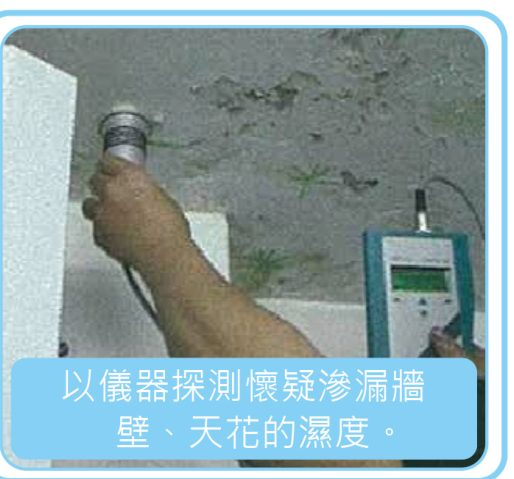
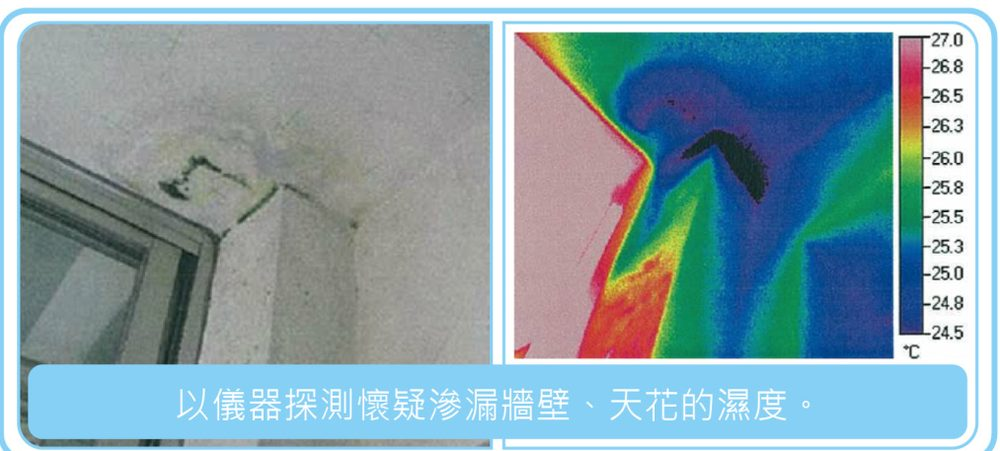
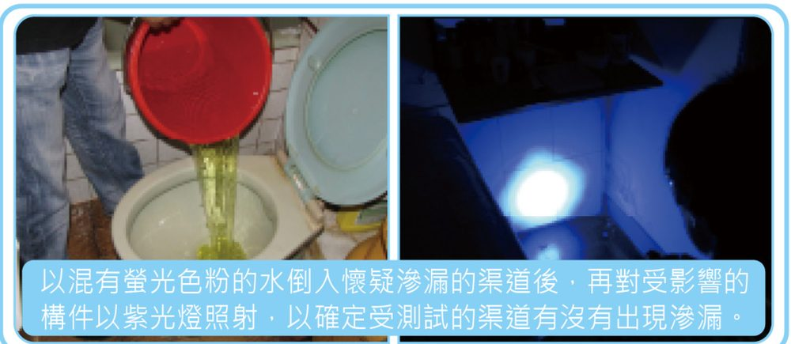

5
自己查唔到？專業現場滲漏檢測可以做到什麼
為協助業主履行維修責任，對於難以確定滲漏源頭的個案，土地工務局已委託專業檢測機構對樓宇滲漏水及塞渠個案進行測試工作。 高端儀器能以無破損方式檢測懷疑受影響的構件，提供客觀及科學的數據。
1 · 目測
任何檢測服務之基本：於不同位置對受影響之單位及懷疑滲漏之單位進行基本分析及記錄。
2 · 微波探濕
利用不同探測深度之探頭及儀器，向滲漏構件進行不同深度之濕度測量，從而進行分析。

圖：《處理樓宇滲漏常識》P.18 · 以儀器探測懷疑滲漏牆壁、天花的濕度
3 · 紅外線成像測溫
於微波探濕難於觸及之位置，進行表面溫度之測量及紀錄，從而進行分析。

圖：《處理樓宇滲漏常識》P.19 · 紅外線成像測溫
4 · 色粉測試
於懷疑滲漏之排水渠灌入無毒螢光劑，並於滲漏位置利用紫光燈檢查螢光劑是否存在，從而進行分析。

圖：《處理樓宇滲漏常識》P.19 · 色粉測試
此外，在情況許可及有需要時，還會使用 Leak Seeker 滲漏尋檢儀、膨脹氣球不漏試驗、地台盛水測試、坡度及流向檢測、流量檢測、裂縫寬度檢測、溫濕組合計、內窺鏡檢測及喉管壓力不漏測試等方法進行檢測。
具資格簽發滲漏水檢測報告的合資格實體名單，可於
土地工務局專題網頁查閱。